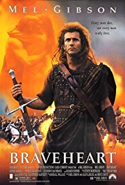
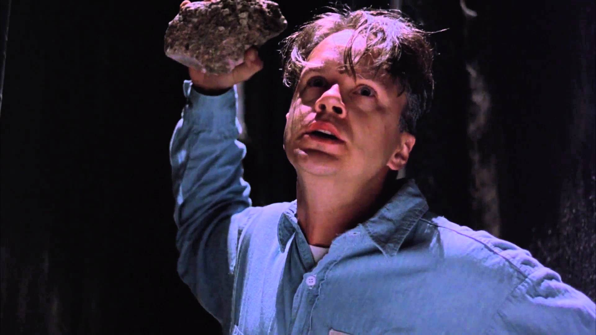
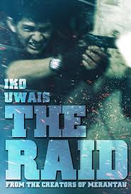
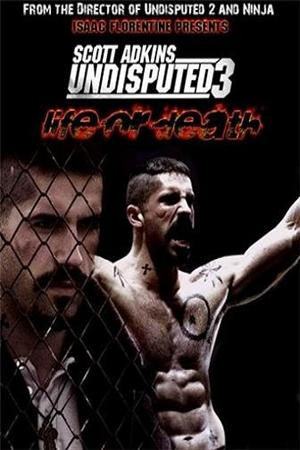

Genre: drama, family
Release date: 2009, august
About: A college professor's bond with the abandoned dog he takes into his home.
Stars: Richard Gere, Joan Allen, Cary-Hiroyuki Tagawa and etc
Genre: Biography, Drama, History
Release date: 24 May 1995 (USA)
About: When his secret bride is executed for assaulting an English soldier who tried to rape her, Sir William Wallace begins a revolt against King Edward I of England
Stars: Mel Gibson, Sophie Marceau, Patrick McGoohan
Genre: Crime, Drama
Release date: 14 October 1994 (USA)
About: Two imprisoned men bond over a number of years, finding solace and eventual redemption through acts of common decency.
Stars: Tim Robbins, Morgan Freeman, Bob Gunton
Genre: Action, Crime, Thriller
Release date: 5 April 2012 (Russia)
About:A S.W.A.T. team becomes trapped in a tenement run by a ruthless mobster and his army of killers and thugs
Stars: Iko Uwais, Ananda George, Ray Sahetapy
Genre: Action, Crime, Drama
Release date: 5 April 2012 (Russia)
About:In the fourth installment of the fighting franchise, Boyka is shooting for the big leagues when an accidental death in the ring makes him question everything he stands for
Stars: Scott Adkins, Teodora Duhovnikova, Alon Aboutboul
